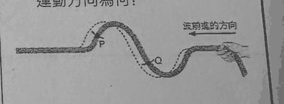
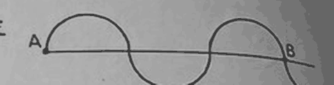
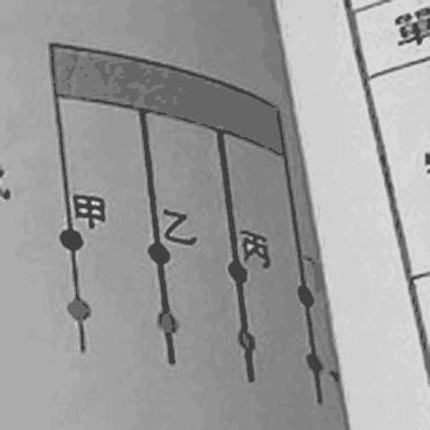

3-1 波的傳播講義 p.3–6 · 24 題
① 重點填空 先自己想，再點空格看答案
- 當波傳播時，介質會隨著左右或前後振動，但隨波前進；而且振源來回振動一次的時間，與介質來回振動一次的時間。p.3
- 波只傳遞，不傳遞物質。p.3
- 力學波：傳播時介質（例：水波、繩波、彈簧波、聲波）；非力學波：介質，在真空中也能傳（例：光波、無線電波等電磁波）。p.3
- 介質振動方向和波前進方向，介質上下振動形成高低起伏的波形，稱為。p.3
- 介質振動方向和波前進方向，介質前後振動形成疏密相間的波形，稱為。p.3
② 逐題練習
丟一個小石頭到池塘裡，在水面會產生漣漪。有關此漣漪的敘述，下列何者錯誤？
波只把能量傳出去，水本身只在原地上下晃。所以浮在水面的葉子也只會原地上下起伏，不會被波推走。
(A) 水波靠水傳 ✓ (B) 國中課本把水波當橫波（水面上下起伏、波往外跑）✓ (C) 漣漪從落水點往外擴散 ✓ → 錯的是 (D)。
小婷想撿拾一片漂浮在湖面的葉子，因此想利用「丟石頭產生漣漪」的方式使葉子漂到岸邊，請問此方法是否可行？
和上一題同一個道理：水波經過時，葉子只會在原地上下晃，波過去了它還在原地。丟再用力也只是晃得比較大。
雷聲由甲地傳到乙地時，雷聲傳遞了什麼？
聲音是波，波傳的是能量。空氣（介質）只在原地前後振動，並沒有從甲地跑到乙地。
有關波的性質敘述，下列何者正確？
(A) 介質不會跟著跑。(C) 需要介質的才叫力學波，不需要的是非力學波。(D) 電磁波根本不需要介質，談不上「介質的運動方向」。
正確的是 (B)：波只傳能量。
有關於橫波和縱波的敘述，下列何者錯誤？
反例就在講義裡：彈簧上下甩是橫波、前後推拉是縱波——同一條彈簧可以產生兩種波。所以 (C) 錯。
橫波或縱波看的是「你怎麼抖」，不是看介質是什麼。
有關橫波與縱波的區別，主要是根據下列哪一項特性？
分類有兩把尺，別搞混：
· 要不要介質 → 力學波／非力學波（那是 (A)）
· 介質振動方向和波前進方向垂直還是平行 → 橫波／縱波 ✓
手上下甩動一條繩子產生繩波（講義附圖），其振動情形與下列哪一種波動最為相似？
繩波的身分：力學波＋橫波。找身分一樣的：
(A) 聲波是縱波 ✗ (B)(D) 光波、無線電波雖然是橫波，但它們是非力學波（不用介質）✗ (C) 水波＝力學波＋橫波 ✓
聲波在空氣中傳遞時，空氣分子的振動方向和波的傳遞方向是平行的，我們把這種波稱為什麼？
振動方向和前進方向平行 → 縱波（又叫疏密波）。聲波在空氣中就是縱波。
下列何者屬於力學波及縱波？
四個都是力學波，關鍵在「縱波」：手的動作要和波前進方向同一條線。
(B) 前後推拉彈簧，波也是往前傳 → 平行 → 縱波 ✓。(D) 左右甩彈簧，波往前傳 → 垂直 → 橫波。
關於各種波及其傳播介質，下列配對何者錯誤？
無線電波是電磁波，不需要介質，所以沒有「傳播介質」可以配對。(A) 錯。
下列何種波不需要經由介質來傳遞？
光從太陽穿過幾乎真空的太空照到地球——光波是非力學波，不需要介質。其他三個都要。
紅外線是屬於一種電磁波，傳播時不需要介質。請問電磁波是哪一種波？
電磁波（光、紅外線、無線電波）屬於橫波，課本「波的種類」表格把光波、無線電波放在非力學波，國中把它當橫波。
它不是力學波（不用介質），但「不是力學波」不等於「什麼都不是」——它仍然是橫波，所以不是 (D)。
下列有關波的敘述何者正確？
(A) 聲波是疏密波（縱波），高低波是橫波的別名 ✗
(B) 橫波是「垂直」✗
(C) 彈簧左右甩也能做出橫波，不一定是縱波 ✗
(D) 繩子軟軟的，沒辦法前後推擠出疏密，只能甩出高低起伏 → 繩波一定是橫波 ✓
由兩種不同波動的相對運動位置關係來說，下圖(一)中的甲位置，相當於下圖(二)中的哪一個位置？

國中課本的對應方式：橫波的波峰 ↔ 縱波的密部；波谷 ↔ 疏部。
甲在波峰和波谷正中間（平衡位置上），所以對應到密部和疏部的正中間。圖(二)中 A 是密部中心、C 一帶是疏部，兩者中間是 B。
屬於力學波的有幾種？
五個都有一樣東西在晃：甲彩帶、乙彈簧、丙水、丁繩子、戊空氣——都靠介質傳，所以都是力學波，共 5 種。
容易漏掉的是甲「彩帶」：彩帶本身就是介質，揮動時的波浪就是力學波。
物質會隨著波而移動的有幾種？
不管哪一種波，介質都只在原地振動，不會跟著波跑。0 種。
屬於縱波有幾種？
縱波＝前後推拉、疏密相間：乙（壓縮拉長的彈簧）、戊（聲波），共 2 種。
甲彩帶、丙水波、丁繩波都是高低起伏的橫波。
就介質的振動方向而言，下列哪兩者的屬性相同？
先分隊：橫波＝甲、丙、丁；縱波＝乙、戊。
(A) 甲橫乙縱 ✗ (B) 乙縱丙橫 ✗ (C) 丙、丁都是橫波 ✓ (D) 丁橫戊縱 ✗
在繩子 P、Q 處分別繫上一條紅色絲帶，手持繩子右端上下甩動，產生一個向左前進的繩波，虛線代表稍後另一瞬間波的形狀（如圖）。P 點及 Q 點的介質運動方向為何？

判斷法：波從哪邊來，下一刻你就會變成「那一邊鄰居」現在的高度。
波向左走 → 波從右邊來 → 每個點看右邊的鄰居。
P：右邊鄰居比 P 高 → P 往上。Q：右邊鄰居比 Q 低 → Q 往下。
也可以直接看虛線：P 附近的虛線在 P 上方、Q 附近的虛線在 Q 下方，答案一樣。
如右圖所示，波在傳播時，介質往返振動一次的路徑何者正確？

介質不會沿著波形跑——它只在自己的位置上上下下。
b 點的「一次往返」就是：b 往下到 f、回到 b、往上到 e、再回到 b → (B)。(A)(D) 是沿著波形走，那是「波形」在動，不是介質。
跳彩帶舞時，若彩帶振動方向是南北向，那麼彩帶上波的行進方向不可能是哪一個方向？
彩帶波是橫波：前進方向一定和振動方向垂直。
振動是南北向，前進方向就不可能是南或北 → (D) 向南不可能。向上、向下、向西都和南北垂直，都有可能。
有一繩波與其運動方向如下圖所示，試問此繩中之 A、B 質點的運動方向為何？

波向右走 → 波從左邊來 → 每個點看左邊的鄰居。
A、B 都在「波谷爬到波峰」那一段斜坡上，左邊鄰居都比較低 → 下一刻都要往下 → A、B 都向下。
(A) 繩上的點只會上下動，不會向右跑。
右圖有一正在向左傳遞的繩波，繩上 A、B 兩點的運動方向為何？

波向左走 → 看右邊的鄰居。
A 在往上爬的坡上，右邊鄰居比較高 → A 向上。B 在往下走的坡上，右邊鄰居比較低 → B 向下。
手持繩振出一繩波，如下圖所示。試問手持繩振動的先後順序方向何者較為合理？

波向左跑，跑在最前面（最左邊）的部分是最早做出來的。
從左往右讀波形：先是一個波谷（手先往下↓、再拉回來↑），接著一個波峰（手往上↑、再拉回來↓）→ ↓↑↑↓。
3-2 波的特性講義 p.7–12 · 32 題
① 重點填空 先自己想，再點空格看答案
- 週期：來回一次所需要的時間，常以 T 表示，單位是。週期 ＝ 時間 ÷ 振動次數。p.7
- 頻率：在一秒鐘內所完整振動的次數，常以 f 表示，單位是。頻率 ＝ 振動次數 ÷ 時間 ＝ 1 ÷ 週期。p.7
- 波長：相鄰兩波峰的距離或相鄰兩的距離，常以 λ 表示。p.7
- 一個完整波（ 個振幅）的水平長度。p.7
- 波速只與傳遞波動的介質和（溫度、濕度和風向）有關，與介質振動的頻率、週期、波長和振幅無關。p.8
- 在同一介質、相同狀況下傳遞的波，則固定。因此波長與頻率成，波長與週期成。當波源加速振盪，使頻率增加時，則波長會變。p.9
② 逐題練習
關於疏密波的敘述，下列何者錯誤？
疏密波是縱波的別名；橫波的別名是高低波。(A) 錯。
(D) 縱波的波長＝相鄰兩密部（或兩疏部）中心的距離 ✓
彈簧波每秒來回振動 2 次，經測量發現彈簧在 2 秒鐘內，前進了 20 公分，試問此彈簧波的週期為多少？
每秒振動 2 次 → 頻率 f ＝ 2 Hz。
週期 T ＝ 1 ÷ f ＝ 1 ÷ 2 ＝ 0.5 秒。
先看單位就能刪掉 (A)(B)：週期的單位是「秒」，不是「赫」。「前進 20 公分」是算波速用的，這題用不到。
承上題，試問此波的頻率為多少？（選項：(A) 1/4 sec (B) 4 sec (C) 1/4 Hz (D) 4 Hz）
照上一題「每秒來回振動 2 次」，頻率就是 2 Hz——選項裡沒有。
(A)(B) 單位是秒，一定不是頻率；(C)(D) 的 1/4 Hz、4 Hz 和題目數字對不起來。
下列為同一條繩索在同一時間振動出的繩波，請問哪一個週期最大？

同一條繩子 → 波速一樣。波速 ＝ 波長 ÷ 週期，波速固定時，波長愈長，週期就愈大。
所以只要找波長最長的：(A) 10 cm 裡有一整個波 → 波長 10 cm；(B) 10 cm 只有半個波（一個拱）→ 波長 20 cm，最長。
如右圖所示，週期波的週期為 2 秒，則波上 A 點的波動情形要傳到 B 點所需的時間為＿＿秒。

數 A 到 B 有幾個波：一個波峰（半個波）＋一個波谷（半個波）＋一個波峰（半個波）＝ 1.5 個波。
波每經過一個週期前進一個波長 → 1.5 個波長要 1.5 × 2 ＝ 3 秒。
右圖所示為一繩波，已知 A、B 間的距離為 5 公分，則此繩波的波長為多少？

從 A 數到 B：A 和 B 都在平衡線上，中間有 2.5 個波（兩個完整波再加半個）。
波長 ＝ 5 ÷ 2.5 ＝ 2 公分。
此波的振幅為何？

圖上的 20 公分是從波峰到波谷的高度。振幅是從平衡位置到波峰，只有一半 → 10 公分。
此波的週期為何？
整張圖是 1 秒內產生的，數一數有 4 個完整的波 → 1 秒振動 4 次 → 頻率 4 Hz。
週期 ＝ 1 ÷ 4 ＝ 1/4 秒。(D) 4 Hz 是頻率，不是週期。
此波的波長為何？
標著 60 公分的那一段裡面剛好有 3 個完整的波 → 波長 ＝ 60 ÷ 3 ＝ 20 公分。
一條繩子綁在穩定的振盪器上，每振動一次需時 5 秒，產生波長為 5 m 的波形，試求：(1) 頻率為多少 Hz？(2) 波速為多少？
(1) 振動一次 5 秒 → 週期 T ＝ 5 秒 → 頻率 f ＝ 1 ÷ 5 ＝ 0.2 Hz。
(2) 波速 ＝ 波長 ÷ 週期 ＝ 5 m ÷ 5 s ＝ 1 m/s（或 f × λ ＝ 0.2 × 5 ＝ 1）。
如右圖所示，若將振動頻率加倍，則波將如何變化？

同一條繩子 → 波速不變，所以 (A) 錯，(C) 也錯（速度沒變、距離沒變，時間就不變）。
頻率加倍 → 波長減半（變短）→ (B) 錯。波長變短，同一段 AB 裡就擠得下更多個波 → (D) ✓
若繩上週期波的頻率變為原來的 3 倍，則下列敘述何者正確？甲.波速不變；乙.波速變為原來的 3 倍；丙.週期變為原來的 1/3 倍；丁.波長變為原來的 3 倍；戊.波長不變。
同一條繩子，波速不變（甲 ✓、乙 ✗）。週期 ＝ 1 ÷ 頻率 → 變 1/3（丙 ✓）。
波長 ＝ 波速 ÷ 頻率 → 頻率 3 倍，波長變 1/3（丁 ✗、戊 ✗）。正確的是甲丙。
若波在相同狀態下的同一介質中傳播，當頻率變小時，下列何種改變是正確的？
同一介質、同一狀態 → 波速固定。波長 ＝ 波速 ÷ 頻率，頻率變小 → 波長變長。
將一個拉緊的長彈簧，一端固定，另一端則繫在一個振動體上，隨之做左右的往復運動。若該振動體每分鐘振動 120 次，在彈簧上所生波的波長為 20 公分，則該彈簧波的頻率為＿＿赫；其傳遞速率為＿＿公分／秒。
頻率要換成「每秒」：120 次 ÷ 60 秒 ＝ 2 赫。
波速 ＝ 頻率 × 波長 ＝ 2 × 20 ＝ 40 公分／秒。
最常見的錯：直接拿 120 去乘，忘了「每分鐘」要先換成「每秒」。
若使一繩波之週期加倍，則下列情況中哪些是正確的？(A) 波速不變 (B) 波速減半 (C) 頻率減半 (D) 波長加倍 (E) 波長不變
同一條繩子，波速不變（A ✓，B ✗）。頻率 ＝ 1 ÷ 週期 → 週期加倍、頻率減半（C ✓）。
波長 ＝ 波速 × 週期 → 週期加倍、波長加倍（D ✓，E ✗）。
有一水波每秒振動 5 次，且測得此波長為 2 公分，則其傳播速率為多少？
每秒 5 次 → f ＝ 5 Hz。波速 ＝ f × λ ＝ 5 × 2 ＝ 10 公分／秒。
右圖是用手做前後完整振動產生的一個彈簧波形，若甲、乙相距 40 公分，密部由甲傳到乙共花了 4 秒鐘，試問此彈簧波的波速為何？

波速 ＝ 波走的距離 ÷ 花的時間 ＝ 40 ÷ 4 ＝ 10 公分／秒。
這題不必知道波長或頻率，直接用「距離 ÷ 時間」最快。
將某繩波的振動頻率增加為 2 倍，試問此繩子的波速與波長將會如何改變？
還是那一句：同一條繩子，波速不變，(A)(B)(D) 第一步就錯。頻率 2 倍 → 波長 1/2。
爸爸帶小英環島旅遊，小英發現臺灣東西南北各地的海岸，海波都接近垂直入射海岸，這讓小英非常好奇，試問產生此現象最可能的原因為何？
水波在淺水跑得慢。斜斜打過來的浪，靠岸那一端先進淺水、先變慢，另一端還在深水跑得快，整排浪就慢慢「轉正」，最後幾乎正對海岸。
速率變慢 → 往法線偏 → 折射角變小 → (C)。(B) 把淺水說成變快，方向反了。
如右圖所示，安妮觀察水波由左側的淺水區移向右側的深水區，過程中他所觀察到的圖形最接近下列何者？

淺水 → 深水：波速變快。頻率不變，所以波長變長（右邊的波紋要比左邊稀）。
(C)(D) 右邊的波紋比較密，錯。剩 (A)(B)：速度變快時，前進方向會偏離法線（往交界線那邊倒），(B) 的箭頭進入深水後偏得更斜、波紋更稀 ✓。
抖動細繩的一端，則下列敘述何者正確？

波傳到交界 A，會把能量交給粗繩，粗繩跟著抖起來（同時也有一部分反彈回來，但不會「完全抵消」）。
(D) 細繩和粗繩是不同的介質，波速不一樣。
當波動傳到 A 點之後，會改變的性質有哪些？甲.頻率；乙.波長；丙.振幅；丁.波速。
頻率由波源決定：你的手一秒抖幾下，粗繩就一秒被帶幾下，頻率不變（甲不變）。
換了介質 → 波速變（丁）→ 波長 ＝ 波速 ÷ 頻率也跟著變（乙）；粗繩比較難甩動，振幅也會變（丙）。→ 乙丙丁。
經過 1 秒後，繩波的波形為下列何者？

1 秒 ÷ 0.4 秒 ＝ 2.5 個週期。每過一個週期，波形又變回一模一樣；多出來的 0.5 個週期，波形往前推了半個波長——波峰變波谷、波谷變波峰。
原圖左邊是波峰 → 1 秒後左邊變成波谷，其餘位置上下顛倒 → (C)。
此繩波之波速為何（cm/s）？
圖下的 20 cm 是一格的寬度；一個完整的波（波谷到下一個波谷）佔 2 格 ＝ 40 cm。
波速 ＝ 波長 ÷ 週期 ＝ 40 ÷ 0.4 ＝ 100 cm/s。
此繩波之頻率為多少？

先算波長：圖(乙)的 30 cm 裡有 1.5 個波 → 波長 ＝ 30 ÷ 1.5 ＝ 20 cm。
再數 0.2 秒做出幾個波：圖(甲)只有半個波，圖(乙)有 2.5 個波 → 0.2 秒多做了 2 個波。
頻率 ＝ 2 ÷ 0.2 ＝ 10 Hz。
此繩波之波速為多少？
波速 ＝ 頻率 × 波長 ＝ 10 × 20 ＝ 200 cm/s。
驗算：0.2 秒內波的前端從圖(甲)的位置跑到圖(乙)的位置，前進了約 40 cm，40 ÷ 0.2 ＝ 200 ✓
當海嘯由深水區傳到淺水區時，其波速如何變化？
水波在淺水區跑得慢，所以海嘯靠近岸邊時會減速。
當海嘯由深水區傳到淺水區時，其振幅變化為何？
文章自己說了：海上只有 7 公分的小波浪，到岸邊變成 12 公尺高的巨浪 → 振幅變大。（波變慢、擠在一起，能量集中在比較淺的水裡，浪就堆高了。）
當海嘯由深水區傳到淺水區時，其波長如何變化？
頻率由波源決定、不會變；波速變慢 → 波長 ＝ 波速 ÷ 頻率 → 變短。
海浪形成的力量主要來自於？
海面上一波一波的浪，主要是風吹出來的。（月亮的引力造成的是一天兩次的漲潮、退潮，不是浪。）
在湖邊有一艘小紙船，當有擾動時，此船會有何運動狀態？
介質（水）只在原地振動，浮在上面的紙船也跟著在原地上下起伏，不會被推走。
(C) 前半句「繞圓」和文章說的水分子運動有點像，但「可能被移上岸」就錯了——波不會把東西搬走。
若有一水波上下起伏的週期為 2 秒鐘，波長為 20 公分，則該波浪的速率約為多少？
波速 ＝ 波長 ÷ 週期 ＝ 20 ÷ 2 ＝ 10 公分／秒。
3-3 聲波的產生與傳播講義 p.13–16 · 24 題
① 重點填空 先自己想，再點空格看答案
- 波以耳玻璃鐘罩實驗：抽氣時，鈴聲漸。抽至真空時，電鈴振動（填有或無），無聲音。p.13
- 音叉快速振動時，周圍的空氣會以相同的膨脹或收縮，做疏密相間的振動，故可知在空氣中傳播的聲波是一種。p.13
- 在不同介質中傳播時速度也不同，一般而言，態 ＞ 態 ＞ 態。p.14
- 溫度愈高時，聲速愈。空氣中的聲速（v）與氣溫（T）的關係式：（v：聲速 m/s；T：氣溫 °C）。p.15
- 順風時，聲速較；逆風時，聲速較。p.15
- 濕度愈大，表示空氣中含水（液體）愈多，因此聲速較。p.15
② 逐題練習
下列有關聲音的敘述，何者正確？
(A) 水、固體也能傳聲 ✗ (B) 空氣中的聲波是縱波 ✗ (C) 空氣不會跟著跑 ✗
(D) 發音體前後振動，推著旁邊的空氣以同樣的頻率前後振動 ✓
下述有關聲波傳播性質的說法，何者正確？
(A) 在岸上喊，水裡的人聽得到 ✗。(B) 輕重只改變振幅（響度），音叉的頻率固定、波長也一樣 ✗。
(C) 打得快只是「咚咚咚」的次數變多，每一聲的音高由鼓皮振動頻率決定，不會因此變高 ✗。(D) 縱波 ✓
當一顆很大的流星撞擊到月球時，正在撞擊地附近的太空人聽得到嗎？
月球幾乎沒有空氣 → 沒有傳聲的介質 → 聽不到。
延伸想想：太空人的腳踩在月面上，地面的振動有可能經由身體「感覺」到——但那是透過固體傳，不是在空氣中聽到。
科學家發現月球上面有許多大大小小的隕石坑，代表月球曾經受到隕石的撞擊。若已知月球距離地球 38 萬公里，而聲速每秒 340 公尺，則當月球受到隕石撞擊後大約多少天，地球上的人類可以聽到爆炸聲？
陷阱題：月球和地球之間是真空，聲音根本傳不過來，算多少天都沒用 → 無法聽見。
如果硬算：380000000 ÷ 340 ≈ 1117647 秒 ≈ 12.9 天——這就是 (A)(B)(C) 在等你上鉤的數字。
將振動的音叉放入水中時，可以看見下列何種現象？
正在發聲的音叉其實在快速振動，放進水裡會把水打得水花四濺——這就是「聲音由振動產生」的證據。
波以耳將抽氣機接在一裝有鈴鐺的容器上，並抽走容器內的空氣，當空氣完全被抽走時，便聽不見容器內傳出的鈴聲。試問此實驗證明了聲波的何種性質？
鈴鐺還在響（還在振動），只是空氣沒了就聽不到 → 證明聲音要靠介質傳。
將電鈴放在裝有抽氣機的鐘罩內，通電後發現鈴槌振動時可以聽見鈴聲，但隨著鐘罩內空氣漸漸被抽出後，鈴聲漸漸變小，最後聽不見鈴聲，其原因為何？
和上一題同一個實驗：空氣變少 → 傳聲的介質變少 → 聲音愈來愈小、最後傳不出來。頻率並沒有改變（(C) 錯）。
當他連續敲打大鼓時，則蠟燭附近的空氣密度變化何者正確？（設每次敲打的力量均相同）

鼓皮前後振動，傳出來的是一疏一密的聲波：密部經過時空氣密度大、疏部經過時密度小 → 忽大忽小。
當他連續敲打大鼓時，此時燭火會有怎樣的變化？
聲波從鼓往蠟燭方向（左右方向）傳，是縱波，空氣沿著同一個方向前後推擠 → 燭火左右晃動。
由此實驗可證明聲波的屬性為何？
靠空氣傳 → 力學波；燭火沿傳播方向左右晃 → 縱波。
下列有關聲波的敘述，何者正確？
(A) 聲速只看介質，不看你彈多快 ✗。(B) 音叉頻率固定，輕重只改變響度 ✓。(C) 水中的聲音可以傳到空氣 ✗。(D) 固體最快、氣體最慢，說反了 ✗。
聲波的傳播速率會受到介質狀態（固態、液態、氣態）的影響，其速率由快而慢依序為何？
粒子排得愈緊密，振動傳得愈快：固 ＞ 液 ＞ 氣（鐵 5032、水 1463、空氣 340 m/s）。
聲音在下列何種介質中，傳播的速率最慢？
先比狀態：空氣最慢，剩 (B)(D)。再比溫度：同樣是空氣，溫度低的比較慢 → 10°C 的空氣。
聲音在下列哪種介質中傳播速率最快？
固體最快 → 剩 (B)(D) 兩個鋼鐵；溫度高一點的 20°C 那個勝出。
小如走在集集火車站的鐵軌上，當火車快要進站時，他發現鐵軌先產生振動，才聽見火車的聲音，請問造成此現象的原因為何？
同一個火車聲，一路走鐵軌（固體，很快）、一路走空氣（很慢），鐵軌那一路先到。
關於聲波的敘述，下列何者正確？
聲速只由介質決定。同一地點 → 同一種空氣 → 大聲小聲、高音低音都一樣快。(C) ✓，(B)(D) ✗；(A) 真空不能傳聲。
關於聲音傳遞快慢的情形，下列敘述何者正確？
風會「推一把」或「擋一下」：逆風較慢、順風較快。說話急不急、聲音高不高都不影響聲速。
游泳比賽時，啦啦隊對著游泳選手加油，當加油聲傳到水中時，下列各項波的性質何者不變？
從空氣進到水：介質換了（D 變），聲速變快（A 變），所以波長也變（C 變）。
頻率由發聲的人決定，換了介質也不變 → (B)。這就是為什麼在水裡聽到的音高還是一樣。
婷婷將沖天炮直立於地面，點燃後筆直射向高空，看到沖天炮爆炸後，過了 0.5 秒才聽見爆炸聲。已知當時的聲速為 340 公尺／秒，則沖天炮爆炸點與婷婷的距離約為多少？
光幾乎瞬間到，所以 0.5 秒全部是聲音在路上的時間。距離 ＝ 340 × 0.5 ＝ 170 公尺。
這題聲音只走單程（爆炸點 → 婷婷），不要像回聲題一樣除以 2。
如果看見閃電之後，經過 5 秒鐘才聽見雷聲，若當時的聲速為 346 公尺／秒，則發生閃電處距離觀測的地點之距離大約為＿＿公尺；當時的氣溫為＿＿°C。（註 1. V（m/s）＝ 331（m/s）＋ 0.6 × T（°C）；註 2. 溼度及風速的影響不計）
距離 ＝ 346 × 5 ＝ 1730 公尺（單程）。
氣溫：346 ＝ 331 ＋ 0.6T → 0.6T ＝ 15 → T ＝ 25 °C。
在 20 °C、乾燥無風的空氣中，文萱敲了一根鐵管一下，宇國將耳朵貼在鐵管的另一端上，並聽到了兩次響聲。第一次是由鐵管傳來的，第二次是由空氣傳來的，兩次響聲相隔 3 秒，請問文萱敲鐵管處距離宇國聆聽處＿＿公尺？（鐵管傳聲速率約為 5145 公尺／秒）
先算空氣聲速：20 °C → v ＝ 331 ＋ 0.6 × 20 ＝ 343 m/s。
設距離 d。空氣花 d ÷ 343 秒、鐵管花 d ÷ 5145 秒，差 3 秒：d ÷ 343 － d ÷ 5145 ＝ 3。
巧的是 5145 ＝ 343 × 15，所以 d ÷ 343 × (1 － 1/15) ＝ 3 → d ÷ 343 × 14/15 ＝ 3 → d ＝ 3 × 343 × 15 ÷ 14 ＝ 1102.5 公尺。
驗算：1102.5 ÷ 343 ≈ 3.214 秒，1102.5 ÷ 5145 ≈ 0.214 秒，差 3 秒 ✓
| 日期 | 溫度 | 相對溼度 | 風向 | 紀錄時間 |
|---|---|---|---|---|
| 8 月 1 日 | 28°C | 25% | 順風 | 10:01:39 |
| 8 月 2 日 | 28°C | 25% | 無風 | 10:01:40 |
| 8 月 3 日 | 30°C | 35% | 順風 | 10:01:37 |
| 8 月 4 日 | 34°C | 25% | 無風 | 10:01:36 |
| 8 月 5 日 | 34°C | 32% | 無風 | 10:01:35 |
| 8 月 6 日 | 30°C | 30% | 順風 | 10:01:38 |
由哪幾天實驗可以證明，溫度越高聲速越快？
要證明「溫度」的影響，就只能讓溫度不同，其他（濕度、風向）都相同。
8/2：28°C、25%、無風；8/4：34°C、25%、無風 → 只有溫度不同 ✓。8/4 的聲音比較早到（10:01:36 比 :40 早），溫度高的比較快。
(A) 溫度相同 ✗。(C) 濕度、風向都不同 ✗。(D) 濕度、風向都不同 ✗。
由上述實驗中，我們可以知道哪些情況時聲速會較快？
三個條件各自比一次：溫度高較快（8/2 vs 8/4）；順風較快（8/1 vs 8/2）；濕度大較快（8/4 vs 8/5，34°C 無風，32% 的比較早到）。
全部湊起來 → 溫度高、溼度大、順風 → (D)。
若 8 月 2 日當天的聲速為 350 公尺／秒，則兩人的距離約為多少公里？
8/2 從 10:00:00 到 10:01:40，共 100 秒。距離 ＝ 350 × 100 ＝ 35000 公尺 ＝ 35 公里。
3-4 聲波的反射與超聲波講義 p.17–22 · 37 題
① 重點填空 先自己想，再點空格看答案
- 聲音傳播至物體表面時，部分聲音被物體吸收，部分聲音被物體反射。反射回來的聲音稱為或。p.17
- 聲波遇到光滑或堅硬的表面時較易，但遇到有孔隙或柔軟的表面時則易被，使得回聲減弱。p.17
- 原音與回音的比較：不變的是：、、、；變小的是：、與。p.17
- 人若要分辨出原音和回音，兩個聲音至少需間隔秒，人耳才能分辨出來。例：以聲速 340 m/s 計算，人與障礙物至少需相距公尺以上。p.17
- 船艦利用聲納探測海洋的深度 h，波源發聲後過了時間 t 接收到傳回來的回聲，則聲波傳播 2h 花了時間 t。公式：2h ＝ v × t → 。p.17
- 聲波的分類：次聲波（低於 20 Hz，聽不見，例：大象）；可聽見的聲波（20～20000 Hz，例：）；超聲波（高於 20000 Hz，聽不見，例：海豚、蝙蝠）。p.21
- 在同一環境中，超聲波的速度普通聲音速度。（填入 ＞、＜、＝）p.21
② 逐題練習
甲生站在一面牆的前面，如果甲生要聽到自己講話的回聲，請問要距離牆前多遠處？（當時聲速為 340 公尺／秒；已知回聲與原聲必須要間隔 0.1 秒以上，才可分辨）
回聲要跑去再回來：0.1 秒內聲音走 340 × 0.1 ＝ 34 公尺，這是來回的路程。
單程 ＝ 34 ÷ 2 ＝ 17 公尺，所以至少要離牆 17 公尺。
海面上的船隻以聲納探測海水深度，從發出聲波到接收到回聲為止，共花了 10 秒。假設當時海水中的聲速為 1485 公尺／秒，則海底到船隻的距離為多少公尺？
來回共 10 秒 → 單程 5 秒。深度 ＝ 1485 × 5 ＝ 7425 公尺。
（套公式 h ＝ v × t ÷ 2 ＝ 1485 × 10 ÷ 2，一樣。）
如右圖是臺中科學博物館千里傳音示意圖，圖中可表示出聲音的哪一個現象？

兩個人背對背站在兩個大圓盤前，小聲說話也聽得到——聲音打到弧形的盤面反射、集中到對面那個人耳邊。
下列關於回聲的敘述，何者錯誤？
原聲先到、回聲後到，兩個都聽得到（相隔太近時會疊在一起變響亮）。「只聽到回聲」不可能 → (D) 錯。
關於回聲及其應用，下列哪一項敘述是錯誤的？
小房間裡聲音照樣反射，只是牆太近，回聲和原聲相隔不到 0.1 秒，耳朵分不出來，聽起來像同一個聲音（還變得比較響）。(C) 錯。
下列何者不是因為回聲所造成的現象？
(D) 是聲音從空氣傳進水裡（介質可以傳聲），和反射無關。其他三個都是回聲在作用。
下列關於回聲的敘述，何者錯誤？
和第 2 題一模一樣，只是選項換了位置：錯的是「只能聽到回聲、聽不到原聲」→ 這次在 (C)。
考試常這樣：同一題把選項洗牌。記的是「哪一句錯」，不是「選哪個字母」。
當前進的波遇到障礙物時，返回原來介質的現象稱為什麼？
「碰到東西、彈回原來的介質」＝反射。若是穿進另一種介質、方向偏折，才是折射。
將手圈成喇叭狀呼叫遠處的好朋友，聲音會變得較為清晰，是利用聲波的何種特性？
手圍成的喇叭讓聲音在手掌間反射、集中往前送，不會四散。傳聲筒也是同一個道理。
下列何種現象的原理和聲音的反射無關？
(D) 證明的是「發聲的物體在振動」，跟反射無關。(A)(B)(C) 都是靠回聲。
下列何種現象的原理和聲音的反射無關？
和上一題同一招，這次放在 (C)：音叉激起水花 → 證明發聲體在振動，和反射無關。
元元和倫倫在同一個空間裡向對面的方方大喊，元元的聲音小、倫倫的聲音大。若兩人與方方的距離均相等，請問方方會先聽到誰的聲音？
聲音大小（響度）不影響聲速。同一個空間、同樣距離 → 同時聽到。
在狹小的浴室內唱歌，音量效果較佳，其原因為何？
浴室小、牆面又光滑：回聲很強而且來得很快（不到 0.1 秒），和原聲疊在一起 → 聽起來更響亮。
在禮堂或音樂廳常可見到其四周懸掛紅色簾幕，其最主要之目的為何？
柔軟的布料會吸收聲波，回聲變少，台上的聲音才不會糊成一團。
華勳為一家劇院重新裝潢，為了防止聲音被回聲所干擾，他可以在劇院四周的牆壁上，做下列哪幾項處理？甲.貼上多孔的木板；乙.懸掛柔軟的布幔；丙.加些裝飾品，使牆面凹凸不平；丁.焊上堅硬又光滑的鐵板。
減少回聲有兩招：吸收（多孔、柔軟：甲、乙）和打散（凹凸不平，反射方向亂掉：丙）。
丁「堅硬又光滑」正好最會反射，會讓回聲更嚴重。→ 甲乙丙。
有一聲波入射障礙物的情形如右圖所示，箭號表示聲波前進方向，試問此聲波碰撞到障礙物時之反射角為幾度？

圖中的斜線是波前（一排一排的波），30° 標的是波前和障礙物表面的夾角。
箭號（前進方向）和波前垂直，所以箭號和法線（垂直於表面的線）的夾角也是 30° → 入射角 30°。反射角 ＝ 入射角 ＝ 30°。
回聲與原聲的聲波相比較，何者會改變？
反射回來還在同一種介質裡：波速不變、頻率不變、波長不變。被牆壁吸走一部分能量 → 振幅變小。
原聲與回聲要相隔 0.1 秒以上，人耳才可以分辨；而聲音的傳播速率（v）與當時的溫度（T）有關，其關係為：V（m/s）＝ 331（m/s）＋ 0.6T（°C）。如果竹君和一面大牆壁相距 17 公尺，當他向牆壁高聲喊叫而想聽到自己的回聲，請問當時的溫度不能超過多少 °C？
來回 34 公尺，要花 0.1 秒以上 → 聲速不能超過 34 ÷ 0.1 ＝ 340 m/s。
331 ＋ 0.6T ≤ 340 → 0.6T ≤ 9 → T ≤ 15 °C。溫度更高、聲音更快，回聲就太早回來分不出了。
人耳要分辨出原聲與回聲，兩者至少須間隔 0.1 秒，若聲速為 280 公尺／秒，則東東講話處距離牆壁至少多少公尺，才能分辨出原聲與回聲？
0.1 秒走 280 × 0.1 ＝ 28 公尺（來回），單程 ＝ 28 ÷ 2 ＝ 14 公尺。
(A) 17 是聲速 340 時的答案——這題聲速是 280，別直接背 17。
有一船以 10 m/s 速度向山航行，並發出鳴笛聲，如左下圖。若船於 6 秒後聽到回聲，試問船原本離山多遠？（聲速為 340 m/s）

畫線段想：聲音從船走到山、再走回來和船相遇；船同時也往山前進。
聲音走的 ＋ 船走的 ＝ 2 倍原距離：340 × 6 ＋ 10 × 6 ＝ 2040 ＋ 60 ＝ 2100 → 原距離 ＝ 2100 ÷ 2 ＝ 1050 公尺。
有一船離山 720 m 並遠離山而航行，如右上圖。今船發出鳴笛聲後 6 秒聽到回聲，試問船速為何？（聲速為 340 m/s）
聲音 6 秒走 340 × 6 ＝ 2040 公尺：先走 720 到山，再從山追回船。船這時已經在 720 ＋ 6v 的地方。
720 ＋ (720 ＋ 6v) ＝ 2040 → 6v ＝ 600 → v ＝ 100 m/s。
100 m/s ＝ 時速 360 公里，比高鐵還快——題目數字不太寫實，但算法是對的。
試問甲、乙兩峭壁相距多遠？
甲的回聲 2 秒 → 到甲的距離 ＝ 340 × 2 ÷ 2 ＝ 340 公尺。
乙的回聲再 1 秒，共 3 秒 → 到乙的距離 ＝ 340 × 3 ÷ 2 ＝ 510 公尺。
安琴站在兩峭壁中間 → 相距 340 ＋ 510 ＝ 850 公尺。
安琴聽到第二聲回聲後再過幾秒可聽到第三聲回聲？
第三聲是兩面峭壁都彈過一次的聲音：例如先到甲（340）→ 彈到乙（850）→ 回到安琴（510），共 1700 公尺 → 1700 ÷ 340 ＝ 5 秒。
第二聲在第 3 秒，第三聲在第 5 秒 → 再過 2 秒。
在圖(二)中，當樂隊在 F1 處演奏時，假設聲音對天花板的入射角為 θ，反射角為 Φ，則 θ 與 Φ 的關係為？

反射定律：入射角 ＝ 反射角，不管打在平面還是曲面上都成立。
承上題，若樂隊改在 F2 演奏，則音樂聲會不會反射後在 F1 集中？
反射的路線可以倒過來走：F1 → 牆 → F2 成立，F2 → 牆 → F1 也一樣成立，因為每一次都遵守入射角 ＝ 反射角。
金妮想要幫榮恩減少回聲的干擾，下面哪種方法是對減少回聲最沒有幫助的？
顏色影響的是光，不是聲音。海綿、布幔會吸收聲音；粗糙不平會把反射打散。→ (B) 沒幫助。
金妮想要將木門改裝，讓聲音比較不容易傳出去，何種方法效果最好？
聲音要靠介質才能傳。門中間做一層真空，聲音就過不去了。（雙層隔音窗就是這個原理，中間抽成低壓或填空氣層。）
(A) 鐵是固體，傳聲更快更好，反而不隔音。
關於超聲波，下列敘述何者正確？
(A) 聽不見的還有次聲波（低於 20 Hz）✗。(B) 同一環境中聲速都一樣 ✗。(C) 超聲波也是聲波，要介質 ✗。
(D) 狗、蝙蝠、海豚都聽得到人聽不到的高頻聲音 ✓
蝙蝠盲目飛行時，利用回聲測知牆壁等障礙物之位置，但其發出的聲音人類卻聽不到的原因為何？
蝙蝠發的是超聲波，頻率高於 20000 Hz，超過人耳能聽的範圍。（頻率太高 → 波長反而很短，所以 (C) 也不對。）
下列有關超聲波的敘述，何者正確？
超聲波是看頻率（＞ 20000 Hz），不是看速度或振幅 → (B)(C) 錯；(A) 漏了次聲波。
(D) 太空是真空，任何聲波（包括超聲波）都傳不過去 ✓。太空船要用電磁波（無線電）傳訊息。
自海平面垂直向下發出 25000 赫的超聲波，4 秒後收到回聲，則海底深度為＿＿公尺。（設海中聲速為 1500 公尺／秒）
來回 4 秒 → 單程 2 秒 → 深度 ＝ 1500 × 2 ＝ 3000 公尺。25000 赫只是告訴你這是超聲波，計算用不到。
順發二號漁船在海面上，以聲納偵測魚群，0.8 秒後收到回聲，若海水傳聲速率為每秒 1500 公尺，則魚群與漁船的距離約為多少公尺？
來回 0.8 秒 → 單程 0.4 秒 → 1500 × 0.4 ＝ 600 公尺。(B) 1200 是忘了除以 2。
海面上的船隻以聲納探測海水深度，從發出聲波到接收到回聲為止，共花了 10 秒。假設當時海水中的聲速為 1485 公尺／秒，則海底到船隻的距離為＿＿公尺。
和 p.18 的「試試看」同一題：1485 × 10 ÷ 2 ＝ 7425 公尺。
某船以等速度 34 公尺／秒朝懸崖前進，在船上的人於鳴汽笛後經 6 秒後，聽到由懸崖反射之回聲，若當時聲音速率 337 公尺／秒，則在船上的人剛好鳴汽笛時，船與懸崖的距離為＿＿公尺。
和 p.19 第 18 題同一招：聲音走的 ＋ 船走的 ＝ 2 倍原距離。
337 × 6 ＋ 34 × 6 ＝ 2022 ＋ 204 ＝ 2226 → 原距離 ＝ 2226 ÷ 2 ＝ 1113 公尺。
順發二號漁船在海面上，以聲納偵測魚群，0.8 秒後收到回聲，若海水傳聲速率為每秒 1500 公尺，則魚群與漁船的距離約為＿＿公尺。
和第 24 題一樣，只是改成填充：1500 × 0.8 ÷ 2 ＝ 600 公尺。
蝙蝠的飛行，是利用其發出的聲波來判別牠與物體的相對位置與距離，如果超聲波傳播的速度是 310 m/s，而蝙蝠接收到反射波後的反應時間是 0.3 秒；則一隻以每秒 10 公尺等速度直線飛行的蝙蝠，必須與障礙物至少保持多少距離，才不會撞到障礙物？

分兩段想。① 聽到回聲後還要 0.3 秒才轉彎，這段飛了 10 × 0.3 ＝ 3 公尺——所以聽到回聲的那一刻，離牆至少要 3 公尺。
② 發聲到聽到回聲花了 t 秒：設發聲時離牆 x 公尺。聲音走「x 去 ＋ (x － 10t) 回」＝ 310t，而且聽到時離牆 x － 10t ＝ 3。
由第二式 x ＝ 3 ＋ 10t 代入：310t ＝ 2(3 ＋ 10t) － 10t ＝ 6 ＋ 10t → 300t ＝ 6 → t ＝ 0.02 秒 → x ＝ 3 ＋ 0.2 ＝ 3.2 公尺。
有一架直昇機要利用聲波探測海裡潛水艇的所在位置，已知直昇機在海面上空 90 公尺處，聲音在空氣中的傳播速度為 300 m/s，聲音在海水中的傳播速度為 1500 m/s，直昇機發出聲波後 1.2 秒收到回聲，試問潛水艇離海面多少公尺深？

空氣那一段：來回 180 公尺 ÷ 300 ＝ 0.6 秒。剩下 1.2 － 0.6 ＝ 0.6 秒在水裡來回。
水中單程 0.3 秒 → 深度 ＝ 1500 × 0.3 ＝ 450 公尺。
3-5 多變的聲音講義 p.23–28 · 33 題
① 重點填空 先自己想，再點空格看答案
- 聲音的高低稱為，與物體的振動有關。p.23
- 弦樂器：當弦樂器的弦愈、愈、愈時，發出聲音音調愈，但聲速，與音調高低無關。p.23
- 管樂器：管樂器是藉由改變管樂器內的長度來改變音調。當空氣柱愈短，吹奏所發出的聲音音調愈。p.23
- 共振：兩物體振動頻率相同時，當一個物體振動，另一個物體也跟著振動，稱為或。此一現象說明聲波是在傳遞。樂器的共鳴箱是利用弦線發出的聲音與共鳴箱內的空氣產生共振，可以增加聲音的。p.23
- 聲音的大小稱為，也稱為音量，由聲波的決定。響度以為單位，人類可聽見最小聲音為 0 分貝。p.25
- 許多樂器都會加裝來增強聲音的強度。p.25
- 聲音的特色稱為，也稱為音品，由聲音決定。p.25
- 很少發聲體能發出單一頻率的聲音，大部分的聲音都是由好幾種和都不同的聲音混合而成，其波形也就各不相同。p.25
- 共振的定義：兩頻率相同的發音體，當其中一發音體振動所發出的聲音，傳播至另一發音體時，另一發音體亦會隨之振動而發出聲音的現象，又稱為。相同才可共振。共振可以傳遞能量，並增加。p.27
- 凡是令人感覺不適或是超過法規管制標準的聲音，便稱為。p.28
- 分貝以上的音量會干擾學習；長期處在分貝以上的環境，會讓人產生煩（躁）。p.28
② 逐題練習
一般將音階分為 Do、Re、Mi、Fa、Sol、La、Si，其排列順序為何？
Do Re Mi… 一個比一個高 → 音調愈來愈高 → 頻率由低而高。（頻率變高，波長反而由長變短，所以 (A) 方向反了。）
小緯彈吉他時，發現有一根弦的音調比原來較低，且有點走音了，請問他該如何處理？
音調太低 → 要把頻率拉高 → 弦調緊（愈緊愈高）。換粗弦反而更低；撥快只是節奏變快。
音叉可以作為調音的工具，最主要是因為它具有下列哪一種特性？
一支音叉不管怎麼敲，都只發出同一個頻率，所以拿它當標準音。
下列何者為聲音的振動頻率所決定？
三要素對號入座：頻率 → 音調（高低）；振幅 → 響度（強弱）；波形 → 音色（特色）。
小茂在水龍頭下以空寶特瓶裝水，當瓶子的水越來越多時，水由上方落到水面的距離也越來越短，試問聽到水落到瓶中的聲音變化為何？
音調：瓶裡的空氣柱愈來愈短 → 頻率愈來愈高（裝水時那個「嘟～」愈來愈尖，就是這個）。
響度：題目特別提到「落下的距離愈來愈短」→ 水打到水面的力道變小 → 響度變小。→ (B)。
關於排簫所吹出的聲音，下列敘述何者正確？
管樂器靠空氣柱振動：愈長愈低、愈短愈高。管子長短改變的是音調，不是音量。
阿康在彈吉他時，發現其中一條弦所彈撥出的聲音太低，下列關於阿康調音的敘述，何者正確？
太低 → 要提高頻率 → 調緊。調緊改變的是頻率（音調），不是振幅。
右圖為烏克麗麗 4 條弦線粗細示意圖，且每條弦線的鬆緊程度都相同，若分別以手指按壓甲、乙、丙、丁四個位置，試問彈撥出的聲音由高而低依序為何？（選項：(A) 甲乙丙丁 (B) 丁丙乙甲 (C) 丙乙丁甲 (D) 甲丁乙丙）

判斷方法：鬆緊一樣時，只比兩件事——能振動的弦愈短、弦愈細，音調愈高。
手指按下去之後，能振動的是「按壓點到琴橋（下端）」那一段：按得愈靠下面，振動的部分愈短、音愈高。再看每條弦的粗細，兩個條件一起比。
阿康音樂課想利用自製樂器來表演，他準備了 5 個相同的玻璃杯，並分別裝入不同體積的水，如右圖所示，阿康改以在杯口處吹氣，使杯子發出不同音調的聲音，試問杯子發出的聲音由低而高依序為何？

在杯口吹氣，振動的是杯子裡的空氣柱。水愈多、空氣柱愈短、音調愈高。
圖中甲的水最少（空氣柱最長、最低）→ 戊的水最多（最高）→ 由低而高：甲乙丙丁戊。
如果改成「用筷子敲杯子」，答案會反過來：那時振動的是杯子和水，水愈多愈重、振動愈慢、音愈低。
每秒打鼓 10 下時，所聽到鼓聲的頻率可能為多少赫？
陷阱：每秒打 10 下是敲的節奏，不是聲音的頻率。聲音的頻率是鼓皮每秒振動的次數。
人聽得到的範圍是 20～20000 Hz：(A)(B) 太低聽不到，(D) 太高聽不到 → 只有 (C) 5000 Hz 可能。
每秒打鼓 10 下時，則所聽到鼓聲的頻率可能為多少赫？
和第 10 題完全一樣（講義重複印了一次）：答案 5000 Hz。
金庸武俠小說中黃蓉與郭靖兩人在郊外遇到了西毒歐陽鋒，黃蓉與郭靖合力用魔琴對抗歐陽鋒，卻因功力不足，節節敗退，導致魔琴斷得只剩一根弦，幸好東邪黃藥師趕到，黃藥師利用僅剩的一根弦，發出各種音調的魔音而順利擊敗了歐陽鋒。則甲.改變彈弦的速率；乙.改變弦的鬆緊；丙.改變弦的長短；丁.改變弦的粗細；黃藥師是利用上述哪些方法而改變同一根弦的音調？
能改變弦的音調的有三個：長短、鬆緊、粗細。但只有一根弦，粗細沒辦法變 → 丁不行。
甲「彈得快慢」只改變節奏，不改變音調。→ 乙丙。
有甲、乙、丙、丁四條弦，材質、密度均相同，甲、乙、丙弦的粗細一樣，丁弦比甲、乙、丙弦粗，且可撥動的繩長部分等長，如下圖所示，用手指於 P 點撥動後，皆可聽到因弦振動而發出的聲音，則音調由高至低的順序是下列何者？

長度一樣，比鬆緊（掛多重）和粗細：
甲、乙都被 10 kg 拉著 → 一樣緊、一樣細 → 甲 ＝ 乙。
丙兩端各掛 5 kg，弦上的拉力相當於 5 kg（不是 10 kg！）→ 比甲乙鬆 → 比較低。
丁也是 5 kg，但比較粗 → 比丙更低。
→ 甲 ＝ 乙 ＞ 丙 ＞ 丁。
最常錯在丙：兩邊各 5 kg 不是加起來 10 kg。就像拔河兩邊各用 5 公斤的力，繩子上的拉力是 5 公斤。
坐在教室後面聽老師上課，感覺老師的聲音比較小聲，其原因是聲音傳到後面時，下列何者變小了？
傳得愈遠，能量散開愈多 → 振幅變小 → 響度變小。音調（頻率）、波長、速度都沒變。
「分貝」是測量什麼物理量的單位？
分貝（dB）→ 響度（大小）；赫茲（Hz）→ 音調（高低）。
已知響度每增加 10 分貝，聲音強度增強 10 倍，則 30 分貝的聲音強度是 0 分貝的多少倍？
每加 10 分貝 → ×10。0 → 10 → 20 → 30 分貝，乘了三次 10：10 × 10 × 10 ＝ 1000 倍。
分貝是「乘」上去的，不是「加」上去的——所以 30 分貝不是 30 倍。
小緯聆聽音響中的交響樂 CD，他發現裡面共有 5 種不同樂器發出的聲音，請問他主要是根據這些樂器的何種性質不同而做出判斷的？
不同樂器就算拉同一個音、同樣大聲，聽起來還是不一樣——那就是音色（波形）。
右表所示為同一個環境中，A～D 振源所產生的聲音特性，其中：振源＿＿產生的聲音可以傳得最遠、振源＿＿產生的聲音之音調最高、振源＿＿產生的聲音人耳無法察覺。
| 振源 | 頻率（Hz） | 響度（dB） |
|---|---|---|
| A | 15000 | 10 |
| B | 2000 | 70 |
| C | 100 | 90 |
| D | 15 | 35 |
傳得最遠 → 響度最大（能量最多）→ C（90 dB）。
音調最高 → 頻率最高 → A（15000 Hz）。
人耳聽不到 → 頻率低於 20 Hz（次聲波）→ D（15 Hz）。D 雖然有 35 dB，頻率太低照樣聽不到。
爸爸覺得太大聲，主要原因為何？
大聲 ＝ 響度大 ＝ 振幅大。
媽媽覺得歌手的聲音好高，主要原因為何？
聲音「高」＝音調高 ＝ 頻率高。（注意：生活上說「聲音好高」有時是指大聲，但這裡媽媽說的是音高。）
典穎一聽就知道是張惠妹唱的，主要根據聲音的何種特性？
認得出是誰的聲音 → 音色。每個人的聲帶、口腔不一樣，波形就不一樣。
小明把玩了上述幾種樂器，發現聲音聽起來都不同，這是因為樂器發出的聲波具有何種差異所致？
「不同樂器」聽起來不一樣 → 音色 → 由波形決定。
小明決定買一個鼓，但卻發現鼓聲的音調太高，請問他應該如何調整？
鼓面和琴弦一樣：愈緊愈高、愈鬆愈低。太高就放鬆。打的力氣大小只改變響度。
利用小提琴及長笛同時演奏相同的旋律時，主要可藉由何種特性來分辨兩種樂器的樂音？
「相同的旋律」＝音調一樣，那能分辨的就只剩音色。
響度、音調與發音體振動有何關係？
響度（振幅）和音調（頻率）是兩件獨立的事：大聲不一定高音，高音也不一定大聲。
頻率快 → 音調一定高；但響度看振幅，不一定大 → (C)。(D) 把兩者講反了。
試根據樂音的三要素，完成下列表格：
| 三要素 | 定義 | 俗稱 | 決定因素 | 常用單位 |
|---|---|---|---|---|
| 響度 | 聲音的大小 | 大小聲 | （ ） | （ ） |
| 音調 | 聲音的（ ） | 尖銳或低沉 | （ ） | （ ） |
| 音色 | 聲音的（ ） | 音質（品） | （ ） | — |
一張表記住三要素：
響度 ← 振幅，單位分貝（dB）
音調（聲音的高低）← 頻率，單位赫茲（Hz）
音色（聲音的特色）← 波形，沒有單位
許多樂器都設有共鳴箱，主要目的為何？
共鳴箱裡的空氣和弦一起共振，讓更多空氣一起推動 → 聲音更大聲（響度增加）。
吉他、提琴等樂器的弦，都是裝在一個中空的木盒上，請問木盒的作用是什麼？
中空木盒就是共鳴箱 → 讓聲音更響亮。（和上一題同一個觀念。）
音叉裝在共鳴箱上，聲音明顯的比較大聲，請問這是因為共鳴箱使得聲音的哪一項性質改變？
比較大聲 ＝ 響度變大 ＝ 振幅變大。音叉的頻率沒變。
小妮取來了頻率分別為甲：500 Hz、乙：300 Hz、丙：400 Hz、丁：500 Hz、戊：300 Hz、己：300 Hz 的六支音叉，則任意敲擊其中一支音叉時，最多會有＿＿支音叉同時發出聲音。
共振只發生在頻率相同的音叉之間。分組：500 Hz 有甲、丁（2 支）；300 Hz 有乙、戊、己（3 支）；400 Hz 只有丙。
敲 300 Hz 的其中一支，另外兩支跟著響 → 最多 3 支同時發聲（包括被敲的那一支）。
有五支音叉的振動頻率為：甲.200 Hz；乙.300 Hz；丙.350 Hz；丁.200 Hz；戊.350 Hz，當敲擊哪一支音叉時，其他四支音叉的任一者皆不會有共振產生？
甲和丁同為 200 Hz、丙和戊同為 350 Hz，都有「夥伴」。只有乙 300 Hz 找不到同頻率的 → 敲乙，沒有人共振。
當阿勇敲擊右圖的一個金屬製品時（質量 250 g、頻率 3000 Hz、純金製造），他感覺到身旁附近的另外四件金屬製品當中，有一件也跟著產生共鳴，試問應是圖中的哪個金屬製品？

共鳴只看一件事：頻率相同。質量、材料都是干擾項。3000 Hz → (C)。
(B) 質量一樣、(D) 材料一樣，都是故意放來騙你的。
古人沈括在一部七弦琴上各個音律宮位上放置小紙人，彈奏另一部七弦琴時，便可見到對應的宮位紙人會振動彈跳，沈括稱此現象為「應聲」，此即為聲音的何種現象？
彈這一部琴的某個音，另一部琴同樣音高的那根弦跟著振動、把紙人震起來 → 共振。沈括在北宋就做了這個實驗，比西方早了好幾百年。
圖解重點講義彩頁 · 用自己的話整理
圖解① 波的傳遞與特徵
- 波＝擾動在空間中傳出去。丟石頭進水裡，石頭是波源（造成擾動的東西），水是介質（幫忙傳的東西）。
- 要不要介質分兩類：要介質的是力學波（繩波、聲波）；不要介質的是非力學波（光、無線電波）。
- 振動方向和前進方向分兩類：垂直的是橫波（高低波）；平行的是縱波（疏密波）。
- 週期 T：做出一個完整波要幾秒；頻率 f：一秒做出幾個波（單位赫茲）。兩個互為倒數：f ＝ 1 ÷ T。
- 振幅：平衡位置到波峰（或波谷）的高度。波長 λ：相鄰兩個波峰（或兩個波谷）的水平距離。
- 波速 ＝ 距離 ÷ 時間 ＝ λ ÷ T ＝ f × λ。在同一個介質裡波速固定，所以頻率愈高、波長愈短。
圖解② 聲音的形成與多變的聲音
- 聲音來自振動：音叉、聲帶、鼓皮在振動，推著空氣一疏一密地傳出去——空氣中的聲波是縱波。
- 聲速看介質：固體 ＞ 液體 ＞ 氣體；在空氣中，溫度愈高聲速愈快（v ＝ 331 ＋ 0.6T）。真空傳不了聲音。
- 聲音三要素：響度看振幅（單位分貝）；音調看頻率（單位赫茲）；音色看波形。
- 樂音和噪音：波形規律、聽起來舒服的是樂音；波形雜亂、或音量過大（例如 120 dB）的是噪音。
- 回聲：聲波遇到障礙物彈回來。堅硬光滑的表面容易產生回聲；柔軟多孔的表面會吸收聲音。
- 超聲波：頻率高於 20000 Hz，人聽不到（人耳約 20～20000 Hz）。蝙蝠定位、船的聲納、醫院的超音波檢查都用它。